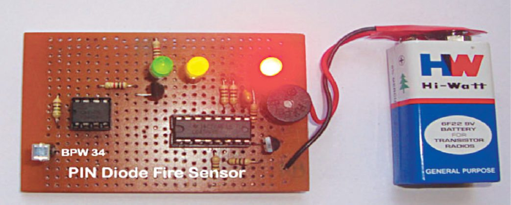
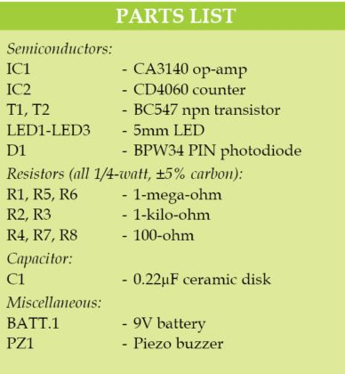
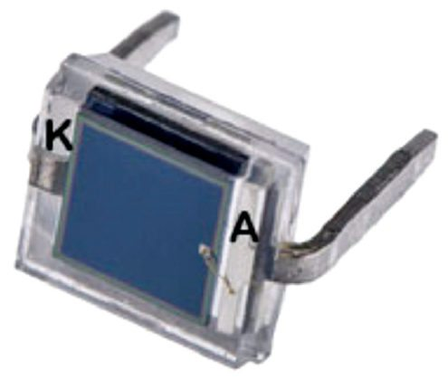
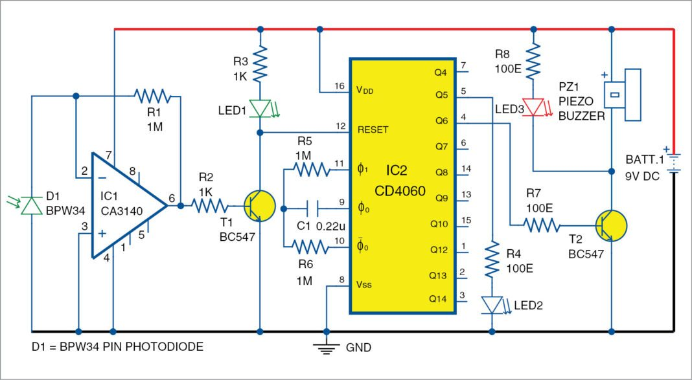

PIN Diode Based Fire Sensor
Here is a PIN diode based fire sensor that activates an alarm when it detects fire. Thermistor based fire alarms have a drawback; the alarm turns on only if the fire heats the thermistor in close vicinity. In this circuit, a sensitive PIN diode is used as a fire sensor for a longer-range fire detection.
 
It detects visible light and infrared (IR) in the range of 430nm – 1100nm. So visible light and IR from the
fire can easily activate the sensor to trigger the alarm. It also detects sparks in the mains wiring and, if
these persist, it gives a warning alarm.
It is an ideal protective device for showrooms, lockers, record rooms and so on. Author’s prototype is shown
in Fig. 1.
PIN diode based fire sensor
PIN diode BPW34 (Fig. 2) is used in the circuit as light and IR sensor. BPW34 is a 2-pin photodiode with anode (A) and cathode (K). The anode end can easily be identified from the top-view flat surface of the photodiode. A small solder point to which a thin wire is connected is the anode and the other one is the cathode terminal.
BPW34 is a tiny PIN photodiode or mini solar cell with radiant sensitive surface that generates 350mV DC open-circuit voltage when exposed to 900nm light. It is sensitive to natural sunlight and also to light from fire. So it is ideal for use as a light sensor. BPW34 photodiode can be used in zero-bias as well as reverse-bias states. Its resistance decreases when light falls on it.
Circuit diagram
Circuit diagram of the PIN diode based fire sensor is shown in Fig. 3. It is built around 9V battery, PIN diode BPW34 (D1), op-amp CA3140 (IC1), counter CD4060 (IC2), transistors BC547 (T1 and T2), a piezo buzzer (PZ1) and a few other components.
Circuit operation
Large-value feedback resistor R1 sets the gain of the transimpedance amplifier since it is in inverting
configuration. Connection of non-inverting input to ground provides low impedance load for the photodiode,
which keeps the photodiode voltage low.
The photodiode operates in the photovoltaic mode with no external bias. Feedback of the op-amp keeps the
photodiode current equal to the feedback current through R1. So the input offset voltage due to the
photodiode is very low in this self-biased photovoltaic mode. This permits a large gain without any
large-output offset voltage. This configuration is selected to get large gain in low-light conditions.
Normally, in ambient light condition, photocurrent from the PIN diode is very low; it keeps output of IC1
low. When the PIN diode detects visible light or IR from fire, its photo current increases and
transimpedance amplifier IC1 converts this current to corresponding output voltage. High output from IC1
activates transistor T1 and LED1 glows. This indicates that the circuit has detected fire. When T1 conducts,
it takes reset pin 12 of IC2 to ground potential and CD4060 starts oscillating.
IC2 is a binary counter with ten outputs that turn high one by one when it oscillates due to C1 and R6.
Oscillation of IC2 is indicated by the blinking of LED2. When output Q6 (pin 4) of IC2 turns high after 15
seconds, T2 conducts and activates piezo buzzer PZ1, and LED3 also glows. The alarm repeats again after 15
seconds if fire persists.
You can also turn on an AC alarm that produces a loud sound by replacing PZ1 with a relay circuitry (not
shown here). The AC alarm is activated through contacts of the relay used for this purpose.